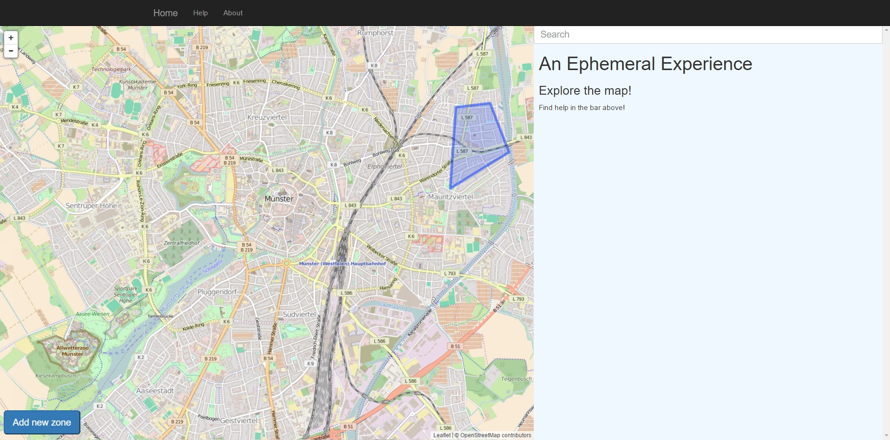
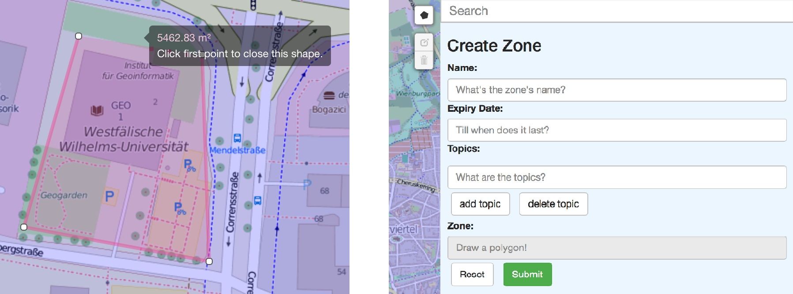

Welcome to the help page!
Here you will get some help and hints for using the website!
The website offers you several possibilities to explore activities in your city. Where is the best party? Where is the cheapest place to eat or where are the nicest places in the city? On the left side you can see a map with all existing zones. One the right side you will later see the messages, statistics or set options for your own zone. To start you can either choose an existing zone in the map, search for a zone in the search bar or create a new zone.
Searching zones
To find a zone you can use the search functionality. You can search for a zone with its name. The search also provides a list with all existing zones.

Accessing messages
To access the messages that were shared within a zone, you have to click on the zone. I there are overlapping zones you have to choose one from the appearing popup. After choosing one the messages are displayed in the message window on the right side. They are ordered from the newest to the oldest message.

Creating zones
For creating a zone you have to use the button. After you have clicked on it the button will disappear and the edit modus opens.
Now you can draw your zone directly on the map and set its properties afterwards. It is mandatory to set a name, a duration until when the zone should exists and at least one topic for the zone. The duration can be defined with the poping up calender. In the calender you can choose a date and a time until when the zone should exist.
The coordinates are inserted automatically after drawing the zone. With the button you can finish the zone. There is also the possibility to reset the entries or to cancel the zone creation.
Exploring statistics
The website offers statistics that show the activity in each zone. For exploring the statistics you have to choose a zone in the map, the statistic will then be generated automatically.